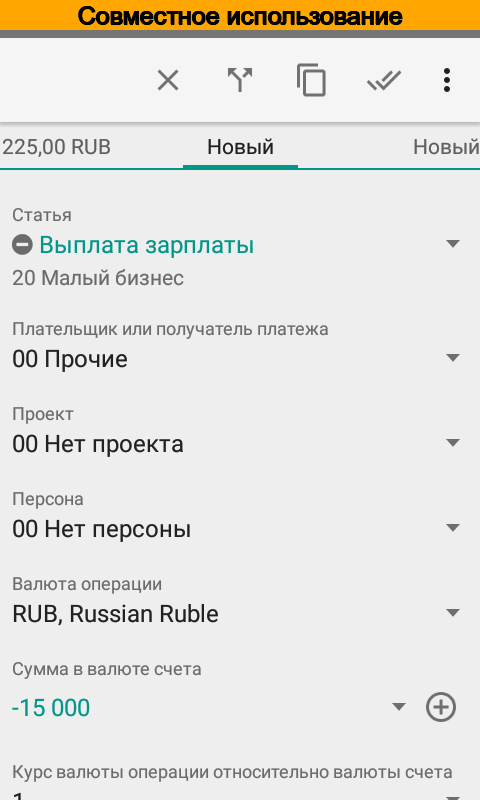

Совместное использование типов портфелей¶
Совместное использование типов портфелей предназначено в основном для предпринимателей и решает проблему «агентских» платежей. Например, пользователь является индивидуальным предпринимателем и имеет два типа портфеля, персональный и малый бизнес. Часто бывает так, что часть расходов за малый бизнес оплачивается с личной карты, которая принадлежит персональному типу портфеля. Т.е. персональный тип портфеля выступает в роли агента для типа портфеля Малый бизнес, т.к. действует в его интересах. Но по умолчанию такие расходы отражаются в персональном типе портфеля, что, конечно, не удобно для формирования отчетности. Более того для таких расходов необходимо использовать аналитики малого бизнеса, которые недоступны для личной карты.
Для решения этой проблемы в приложении предусмотрен режим совместного использования типов портфелей.
Чтобы включить режим совместного использования отредактируйте тип портфеля. Флажок Совместное использование предназначен для того, чтобы аналитики данного типа портфеля были доступны для всех типов портфелей. Флажок Выделение операций при совместном использовании как агентские предназначен для того, чтобы:
В списке операций выделялись как агентские операции те операции, у которых не совпадает тип портфеля счета и статьи;
В отчетах тип портфеля определялся не по типу портфеля счета, а по типу портфеля статьи.
Пример совместного использования типов портфелей¶
Включим режим совместного использования для типа портфеля Малый бизнес.
{kind=link}
{kind=link}
{kind=link}
{kind=link}
Занесем новую операцию выплаты зарплаты работникам со счета Наличные, который принадлежит типу портфеля Персональный, в интересах типа портфеля Малый бизнес.
{kind=link}
{kind=link}
{kind=link}
Видно, что теперь доступна статья Выплата зарплаты, а после ее выбора ниже статьи отображается расшифровка, какому типу портфеля принадлежит аналитика.
{kind=link}
{kind=link}
Теперь проверим список операций, сводку и отчеты. В списке операций новая операция выделена другим цветом, кроме того отдельно рассчитаны итоги. Точно также в сводке итоги рассчитаны отдельно.
{kind=link}
{kind=link}
{kind=link}
В отчетах мы видим, что такая операция попала в тип портфеля Малый бизнес, благодаря чему легче рассчитать баланс.
{kind=link}
Примечание
Чтобы не дублировались расходы, перечисление денежных средств на сумму агентских операций из типа портфеля Малый бизнес в тип портфеля Персональный необходимо отражать переводом